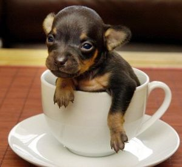

Чого робити не варто або поради по догляду за цуценям.
Поради по догляду за цуценям
Ось вам десять не складних настанов по догляду за цуценям:
Не замикайте щеня в темному приміщенні, не обмежуйте його в пересуванні. Це стримує ріст і розвиток щеняти, щеня буде слабким і хворобливим.
Не прив'язуйте щеня. Наслідками стануть дефекти у формуванні кістяка і порушення психіки, виправити їх буде складно або навіть неможливо.
Не гладьте щеня по голові і вухах - це сприяє неправильній поставі вух.
Не тягніть із зубів у щеняти затиснуту ганчірку, повідок, або іграшку. Ви можете зіпсувати йому прикус і навіть зламати зуби. Обережно розтисніть щелепу щеняти і вийміть річ із пащі.
Якщо в родині є діти, не дозволяйте їм "тягати щеня по руках".
Не можна піднімати цуценя за передні лаби або за шкіру. Щеня ще мале, м'язи й зв'язки в нього слабкі, і якщо його тягати, підхоплюючи під передні лапки, дуже легко спотворити на все життя вивихом або сильним розтяганням.
Навчіться: вказівний і середній пальці однієї руки пропустите між передніми лапками, при цьому грудка ляже на долоню, а пальцями, що залишилися, обхопите боки щеняти, на долоню іншої руки він як би сяде. Спускаючи щеня на підлогу, треба довести всього його на чотири лапи до підлоги і тоді тільки вийняти з-під нього руки. Краще ж самим присідати до щеняти і без гострої потреби не піднімати його.
Не карайте щеня, коли він перебуває на "місці". Щеня на "місці" не треба чіпати, турбувати і краще навіть не гладити. З "місцем" повинні бути зв'язані тільки позитивні емоції.
Не будіть і не викликайте на ігри сплячее щенятко: зростаючому щеняті потрібний сон.
Не дозволяйте щеняті робити те, що йому буде заборонено, коли він виросте: ставати на вас лапами, лізти в постіль, клянчити їжу.
Не дозволяйте цуценяті стрибати на диван, крісло й т.д. - він може ушкодити собі лапки.